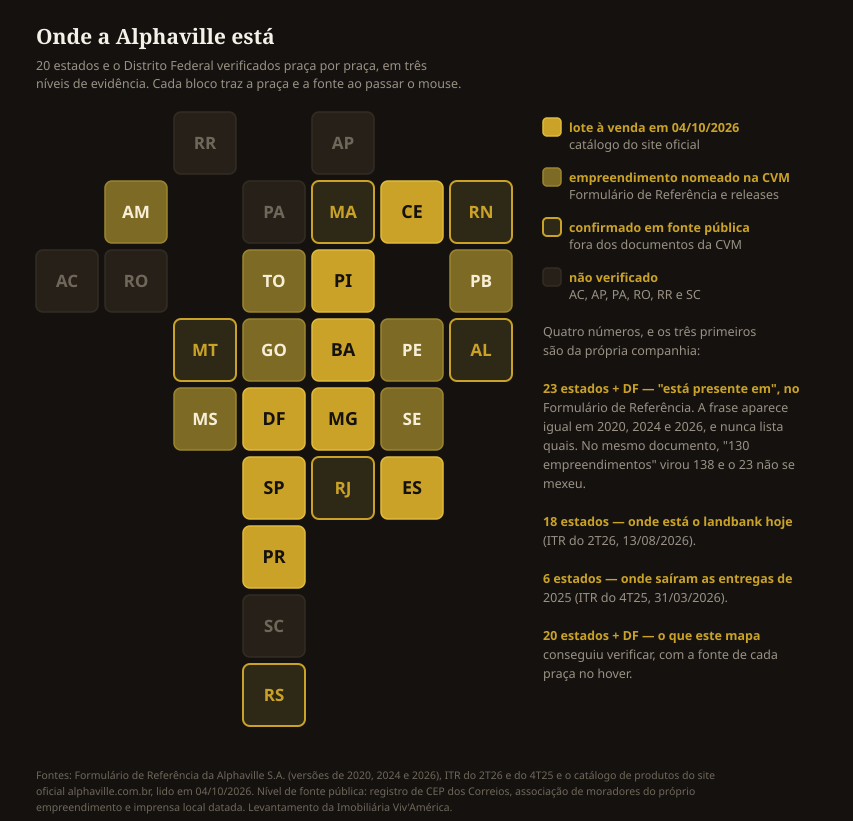

Quando alguém diz que vai morar "num alphaville", raramente está falando da empresa. A palavra virou categoria — e isso não é impressão nossa: é o que a própria companhia escreve, com todas as letras, num documento entregue à Comissão de Valores Mobiliários.
Este texto reconstrói a história da marca a partir das fontes que ela é obrigada a assinar: o Formulário de Referência, o prospecto da abertura de capital e os resultados trimestrais entregues à CVM. Não usamos o site institucional para número nenhum — a página de histórico de lá não tem data de atualização e ainda fala em "mais de 47 anos" de existência para uma empresa fundada em 1973, que hoje tem 53.
Todos os empreendimentos Alphaville
Ver os empreendimentos1. 1973: dois engenheiros e uma fazenda em Barueri
O Formulário de Referência descreve a origem em uma frase:
"A origem da Alphaville data de 1973, quando Renato Albuquerque e Yojiro Takaoka perceberam a demanda por residências de alto nível na Cidade de Barueri e desenvolveram o conceito de Alphaville Residencial, que foi sucesso na região." Formulário de Referência da Alphaville S.A., versão de 30/06/2026, entregue à CVM
Os dois eram sócios da construtora Albuquerque & Takaoka. O terreno veio da antiga Fazenda Tamboré, na divisa de Barueri com Santana de Parnaíba, na região metropolitana de São Paulo. O primeiro Alphaville não é um município nem um bairro de uma cidade só: ele nasceu sobre dois municípios, o que até hoje confunde quem procura o endereço.
O nome vem de uma distopia
"Alphaville" é o título de um filme de Jean-Luc Godard, de 1965 — uma ficção científica em que uma cidade é governada por um computador e o sentimento é proibido por lei. O maior símbolo brasileiro de vida em condomínio foi batizado com o nome de uma cidade onde ninguém pode sentir.
A ironia é boa demais para passar batido, mas também explica algo do projeto: Alphaville foi concebido como cidade planejada, não como bairro que cresce sozinho. O controle é o produto.
De 1973 a 2025
1973
Primeiro Alphaville, em BarueriRenato Albuquerque e Yojiro Takaoka1997
Sai de Barueriprimeiro projeto fora: Campinas1998
Chega a MinasAlphaville Lagoa dos Ingleses, em Belo Horizonte2000
Vai para o Norte e o NordesteParaná, Goiás, Bahia e Amazonas2006
Gafisa entracom 60% das ações2009
Nasce o Terras Alphalinha de lotes menores2013
Pátria e Blackstonecompram 70% da companhia2015
100 projetos lançados2020
Abre capital na B3com o código AVLL32025
Recorde de entregas8 empreendimentos e 2.047 lotes
Marcos registrados no Formulário de Referência entregue à CVM, versão de 30/06/2026.

Alphaville Indaiatuba
Itaici · 131 lotes de 511 a 1.249 m² · clube com piscina de raias · Alphaville
A partir de R$ 888.939
2. O tamanho da coisa hoje
Os números abaixo são os da versão mais recente do Formulário de Referência:
- 138 empreendimentos entregues, em mais de 70 cidades, em 23 estados
- Mais de 78 projetos entregues só nos últimos dez anos
- 24 empreendimentos nos últimos cinco anos, em 15 cidades
- 2025 foi o ano recorde de entregas: 8 empreendimentos, 2.047 lotes, R$ 1,2 bilhão em VGV
Vale olhar a série, porque ela mostra o ritmo. No Formulário de 2020, a companhia declarava "mais de 130 empreendimentos" e "mais de 46 anos de atuação". No de 2026, são 138 e mais de 50 anos. Ou seja: oito entregas a mais em seis anos, com um 2025 que sozinho respondeu por oito delas — a retomada depois da reformulação do modelo de negócio feita em 2019.
3. Em quantos estados, afinal?
Aqui vale parar, porque a própria companhia dá três respostas diferentes — e nenhuma delas vem com a lista.
O Formulário de Referência diz que a Alphaville "está presente em 23 estados, além do Distrito Federal". A frase é a mesma no Formulário de 2020, no de 2024 e no de 2026. No mesmo documento em que "mais de 130 empreendimentos" foi atualizado para 138, o número de estados não se mexeu em seis anos. É um número cumulativo, de quem já pisou no estado algum dia — não de onde a empresa está operando agora.
Os relatórios trimestrais contam outra história, e são mais recentes. O ITR do segundo trimestre de 2026, entregue em 13 de agosto, diz que o banco de terrenos está distribuído por 18 estados. E o ITR do quarto trimestre de 2025 diz que as entregas daquele ano saíram em 6 estados. Ou seja: 23 é o acumulado de meio século, 18 é onde há terra hoje e 6 é onde a obra saiu do papel no último ano fechado.
Como nenhum documento lista as praças, fomos atrás de uma por uma. Chegamos a 20 estados mais o Distrito Federal, em três níveis de certeza: os que têm lote à venda hoje no catálogo oficial, os que aparecem nomeados em algum documento entregue à CVM, e os que só pudemos confirmar fora da CVM — por registro de CEP dos Correios, por associação de moradores do próprio empreendimento ou por imprensa local datada. Os seis que faltam para fechar os 23 estão, provavelmente, entre Acre, Amapá, Pará, Rondônia e Roraima; de Santa Catarina o próprio site informa nenhum empreendimento.

Dois cuidados que mudaram o resultado. O primeiro: sigla de estado solta em documento da CVM não é empreendimento. A seção de processos judiciais do Formulário cita foro em meio país, e Porto Velho e Bayeux entraram ali como tribunal, não como loteamento. Por isso cada praça foi conferida pelo nome do produto. O segundo: "Alphaville" virou nome genérico de condomínio, e há empreendimento chamado Alphaville que não é da Alphaville S.A. Belém ficou de fora por isso — existe um condomínio com esse nome na cidade, mas não encontramos nada que o ligue à companhia.
4. Nem todo Alphaville é Alphaville
Esta é a parte que quase ninguém sabe, e que muda o que você está comprando. A companhia opera três linhas de produto, separadas pelo tamanho do lote:
| Linha | Lote | Posicionamento |
|---|---|---|
| Alphaville | a partir de 360 m² | residencial de alto padrão |
| Terras Alpha | 250 a 360 m² | lotes médios |
| Jardim Alpha | 200 a 250 m² | lote de entrada |
Fonte: Formulário de Referência da Alphaville S.A., versão de 30/06/2026. A companhia registra no INPI, entre outras, as marcas "Alphaville", "Terras Alpha", "Jardim Alpha", "Cidade Alpha", "Alpha Inova" e "Fundação Alphaville".
Na prática: "Terras Alpha Uberaba" e "Alphaville Indaiatuba" carregam a mesma marca-mãe e o mesmo padrão construtivo, mas não são o mesmo produto. Quando alguém diz que comprou "no Alphaville", a primeira pergunta útil é qual linha.
Há ainda as Cidades Alpha, que o Formulário descreve como projetos que "concentram todos os atributos de um centro urbano em uma mesma região" — residencial, comercial e empresarial no mesmo complexo. A Cidade Alpha Ceará, em Eusébio, na região metropolitana de Fortaleza, é o exemplo que os documentos mais citam.
5. O que "Alphaville" quer dizer hoje
A resposta está escrita pela própria empresa, num documento em que mentir é crime:
"...sendo a única empresa do segmento a estar presente em 23 estados e em mais de 70 cidades do país, assim como conforme pesquisas realizadas pelo Instituto de Pesquisa IdeaBR em 2017 e 2018, sendo a marca muitas vezes utilizada como sinônimo de condomínios fechados no Brasil." Formulário de Referência 2020 da Alphaville S.A., entregue à CVM em 19/05/2021
É um caso raro: a marca virou o nome da categoria, como acontece com gilete e xerox. A diferença é que aqui o fenômeno foi reconhecido pela própria titular, em documento público, e sustentado em pesquisa de terceiro.
Isso tem uma consequência prática para quem compra. Muito loteamento fechado é vendido com o argumento de ser "um alphaville" sem ter relação alguma com a empresa. Vale conferir a marca no contrato, não no anúncio.
6. Loteamento fechado não é condomínio — e isso muda a sua conta
Aqui está o ponto técnico que mais confunde comprador, e que vale para qualquer empreendimento desse tipo, com ou sem a marca Alphaville.
Loteamento é regido pela Lei nº 6.766/1979. Nele, as ruas e as áreas públicas são transferidas ao município: a via é pública, mesmo com portaria. O fechamento se dá por concessão ou permissão de uso da prefeitura, e a manutenção fica com uma associação de moradores.
Condomínio de lotes só passou a existir em lei com a Lei nº 13.465/2017, que incluiu o art. 1.358-A no Código Civil. Nele as vias são privadas, parte da área comum, e a cobrança segue a lógica condominial.
A diferença aparece no bolso em três momentos: quem é dono da rua, como se cobra de quem não paga e o que acontece se a associação quebrar. O Formulário de Referência da Alphaville descreve o modelo de gestão pós-entrega assim:
"Após a entrega, os proprietários das unidades, por meio das Associações de Moradores, são responsáveis por zelar e manter a preservação do condomínio e do meio ambiente, o que se tornou um diferencial de valorização dos projetos." Formulário de Referência da Alphaville S.A., versão de 30/06/2026
Antes de assinar, pergunte sob qual das duas leis o empreendimento foi aprovado. A resposta está na matrícula e no memorial de incorporação, não no material de vendas.
7. O sentimento: desejo de um lado, debate do outro
Falar em Alphaville desperta duas reações, e ignorar uma delas seria desonesto.
De um lado, o desejo. Segurança, lazer dentro de casa, vizinhança previsível, um endereço que comunica posição. O produto promete isso e entrega — e é por isso que a marca sustenta preço premium há cinco décadas.
De outro, o debate acadêmico. O modelo é provavelmente o caso mais estudado do urbanismo brasileiro recente. A antropóloga Teresa Pires do Rio Caldeira, em Cidade de Muros: crime, segregação e cidadania em São Paulo, cunhou o conceito de "enclaves fortificados" — espaços privatizados, fechados e monitorados para morar, consumir e trabalhar, apresentados ao comprador como o oposto da cidade. O primeiro Alphaville é o caso central do livro. A discussão segue viva: a revista Novos Estudos publicou uma revisão do conceito 25 anos depois.
Não cabe a uma imobiliária arbitrar esse debate. Cabe dizer que ele existe, porque quem investe quase R$ 1 milhão num lote merece saber que está entrando num modelo urbano com nome, história e literatura própria — e sai mais seguro da decisão, não menos.
E há uma simetria difícil de ignorar: a marca nasceu com o nome de uma distopia sobre uma cidade onde o sentimento é proibido, e virou, no Brasil, o nome do lugar onde as pessoas dizem que se sentem em casa.
8. E em Indaiatuba?
O Alphaville Indaiatuba fica no bairro do Itaici e é da linha principal — a de lote a partir de 360 m². Na tabela de setembro de 2026 são 131 lotes à venda, de 511 a 1.249 m², de R$ 888.939 a R$ 1.609.896, com ato de 20% e saldo em 60 meses sem juros.
Ele aparece na vitrine do site da própria marca, ao lado de praças como Guarajuba, Litoral Norte e Dom Pedro.
Ver os lotes do Alphaville Indaiatuba, com metragem e valor →
Se quiser comparar com os outros condomínios fechados da cidade antes de decidir, o mapa de lotes mostra os 131 lotes do Alphaville posicionados um a um, ao lado de mais de 2.300 lotes de outros 25 loteamentos de Indaiatuba, com preço em cada um.
9. De onde saiu cada número
Todos os dados de empreendimentos, estados, cidades e linhas de produto deste artigo vêm de documentos que a Alphaville S.A. entrega à Comissão de Valores Mobiliários — a autarquia federal que fiscaliza o mercado de capitais. São documentos auditados, datados e públicos:
- Formulário de Referência, versão 3 — entregue em 30/06/2026
- Formulário de Referência 2024 — entregue em 03/12/2024
- Formulário de Referência 2020 — entregue em 19/05/2021
- Prospecto Preliminar da Oferta Pública — 05/11/2020
- ITR 2T26 — 13/08/2026 · ITR 4T25 — 31/03/2026
- Releases de resultados de 2020 e do 4T23
A bibliografia sobre enclaves fortificados é de Teresa Pires do Rio Caldeira (Cidade de Muros, Edusp/Editora 34) e da revisão publicada em Novos Estudos CEBRAP.